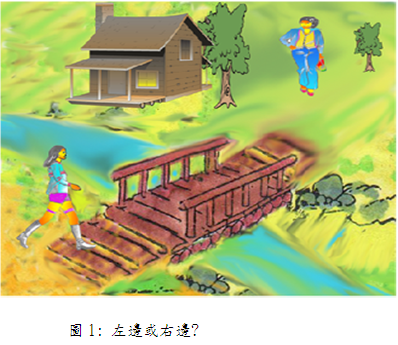
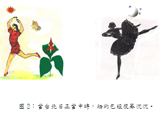
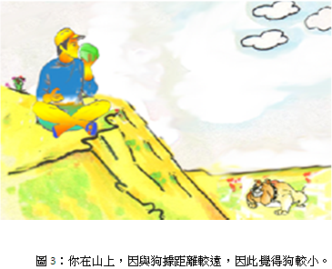
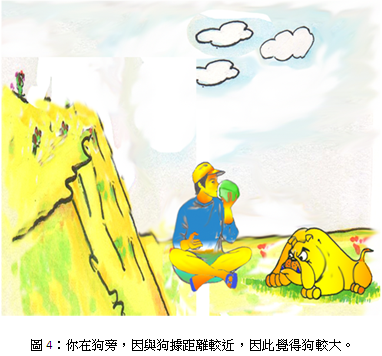
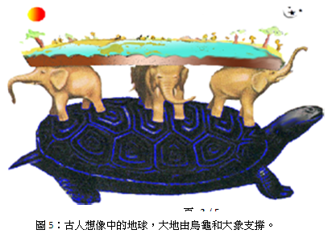
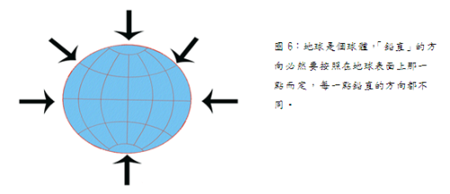
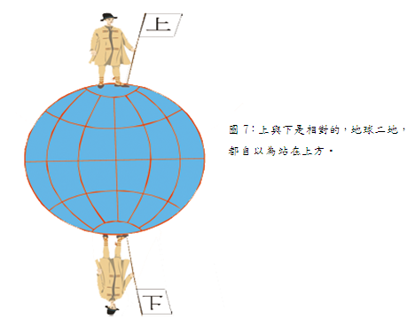

相對與絕對
一、左和右
請問在圖1中，房子是在路的那一邊（左邊或右邊?），請立刻答覆。

若你正從橋走向山區，那麼房子是在左邊;但若你正從山上走向橋，則房子是在右邊。顯然地，當談到路的左或右時，你必需考慮到所謂左或右是相對於那一個方向。我們說「河的右岸」，這是有意義的，因為河的水流快定了河的方向。所謂河的右岸是指我們面向河流方向時我們的右手邊。同樣地，我們可以說車子靠右走，因為車的行動選出了兩個可能方向之一，即車子行駛時的右手邊。
我們體驗到「左」和「右」的概念是相對的，這概念僅在相關的方向被指明後才有意義。
二、現在是白天或晚上 ?
這個問題的答案是看你是在那裡發問的，當台北是白天的時候，美國紐約市卻
正是晚上。這並沒有矛盾，因為白天和晚上是相對的概念。在沒有指明是地球上那一地點時，白天、晚上是相對於，我們的問題不可能有確定的答案，譬如同一時刻，在台北可能回答是白天，但在美國可能卻答是晚上。

三、那一個大些 ?
在下面圖3中，如國果從山上看一隻狗，則狗顯然很小些，但當你走到狗的旁邊則又覺得狗大了許多。如圖4，這並沒有矛盾，你站在不同的觀察地點看狗，一個是你站著離狗較近，一個是你站著離狗較遠，而狗的大小是根據觀察者與狗實際的遠近決定，非依照物體之確實大小而定。這種決定物體的大小是相對的。當我們只說出物體的大小而不指明觀測點時，這是沒有意義的。譬如說：「這塔是在四十五度角下觀測的」便沒有任何意義；但若說:「這塔是在四十五度角下，從離塔15公尺的某一點觀測的」便有明確的意義。


四、絕對被證明是相對的
我們常用「上」、「下」兩字。究竟這兩個概念是絕對的抑或是相對的呢？
歷史上不同的時代 這個問題有不同的答案。當人們還不知道地球是個球體，而還以為它是扁平的，像個薄餅的時候，「鉛直」被作為絕對的方向。古時候的人以為「鉛直」方向在地球表面上任何一點都一樣。所以他們很自然地談到絕對的「上」與絕對的「下」。圖5所描述是古代的人所想像的地球，這在今日看起來是非常可笑的，但古人卻堅信不疑。

當地球被證實是球形時，人們腦子裏的「鉛直」開始動搖。因為若地球是個球體，「鉛直」的方向必然要按照在地球表面上那一點而定。地球上任何一點的「鉛直」方向皆不同（如圖6）。因此從圖7所示，「上」和「下」這兩個觀念現在已沒有什麼意義，除非我們先決定這「上」和「下」是相對於地球上的那一點。所以這些觀念便從絕對的變成相對的。宇宙中也沒有所謂的鉛直方向，因為宇宙中任何一點，我們實在無法說出那個方向是「上」，那個方向是「下」。


五、「普通常識 」提出抗議
我們現在覺得上面所敘述的，都是顯而易見，無需爭論的。但由歷史記載的顯示，在過去，人們並不能夠這麼容易明白「上」「下」的相對性，當某些觀念的相對性在日常經驗中不太顯著時，例如「左」和「右」，人們往往會給它們絕對性的意義。
記得中世紀時代，人們荒謬地反對地球是球形嗎？他們說「人怎能倒置而行？」 這當然是因為他們未能認清地球是個球體及牛頓的萬有引力存在的原因。如果你不肯接受「鉛直」的相對性，而假設台北的「鉛直」方向是絕對的，那你便得承認紐約的居民是在倒置而行，同時你應該記得在紐約市人的腦中，台北居民才是正在倒置而行呢？這沒有矛盾，因為「鉛直」的概念不是絕對的而是相對的。
我們應該注意，僅當考慮在地球上距離頗遠的兩個地點 (例如台北及紐約），我們才開始體悟到相對性對「鉛直」的重要。若我們的討論只限於兩個比鄰的地點，如台北市內的兩間房屋時，我們實際上可以把所有的「鉛直」方向當作平行的，即把鉛直當作絕對的。僅當涉及的地域面積可以和地球的表面積相擬時，我們才會發現把「鉛直」方向作為絕對是多麼的可笑和矛盾。
六、絕對的出現
以上介紹了許多關於相對的事物，但是世界上有沒有絕對的東西呢？答案是：有的，愛因斯坦於1905年時，即大膽在其狹義相對論指出，宇宙萬物皆以相對狀態存在，唯有光速是絕對的，無論用什麼方法去測量，光在真空中飛行的速度，永遠每秒鐘跑3x108公尺，相當每秒鐘繞地球7週半，這個絕對速度也是目前發現跑得最快的物質啊！